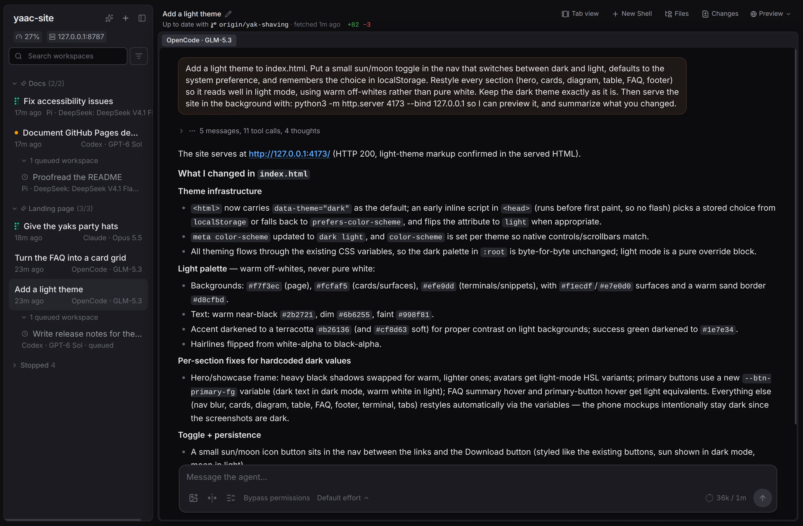
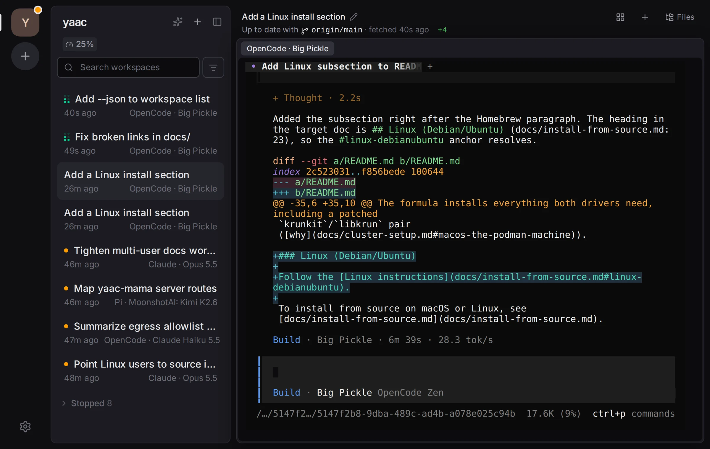
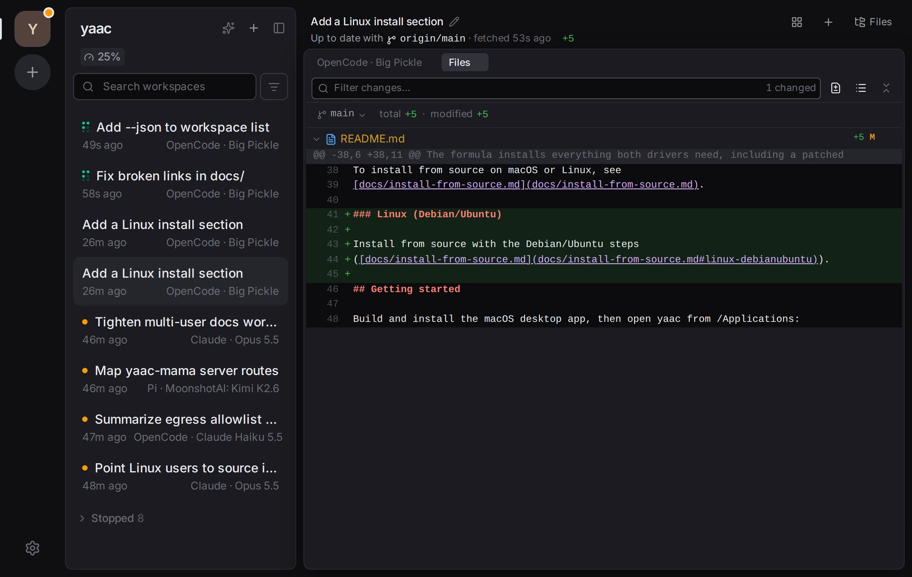
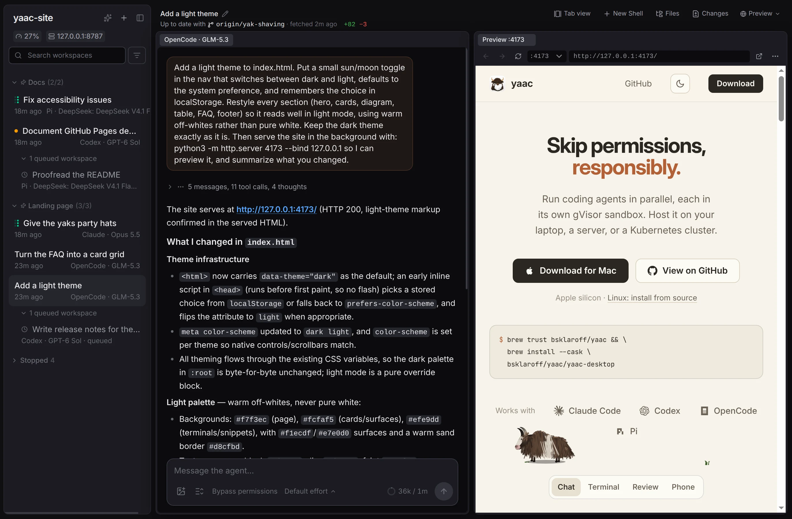

Run coding agents in parallel, each in its own gVisor sandbox. Host it on your laptop, a server, or a Kubernetes cluster.
Apple silicon · Linux: install from source
$ brew trust bsklaroff/yaac && \
brew install --cask \
bsklaroff/yaac/yaac-desktopDrive each agent from a chat pane: prompts, tool calls, and diffs, rendered cleanly.




Agents run sandboxed, coordinate with each other, and stay visible to your team.
Point the app at your laptop, your team's server, or a cloud cluster, and switch between them whenever you need.
yaac-mama between siblingsInstall a cluster for full isolation, or run directly on the host like other agent managers.
| Kubernetes | Containerless | |
|---|---|---|
| Start with | yaac cluster install | yaac server start |
| Agents run | In gVisor-isolated pods | On your computer, as you |
| Git workspace | Fresh clone per agent | Fresh clone per agent |
| Credentials | Placeholders; the proxy swaps in real ones | Real tokens in the workspace |
| Network | Per-project allowlist | Unrestricted |
| Environment | Customizable Docker image | Your computer's own tools |
| Runs on | kind on one machine, k3s on a few servers, or cloud-managed on AWS EKS | Any Mac or Linux machine |
Building for an open-source, self-sovereign, cooperative future.
Your code, credentials, and agent transcripts are stored on machines you control. Runs on open-source infrastructure.
Start on your laptop, then scale out to a few servers or a cloud-managed cluster.
Host one server for you and your friends, or for your whole team.
Yes. yaac is fully open source under the MIT license.
Claude Code, Codex CLI, OpenCode, and Pi.
Yes. Sign in with the agent subscriptions or API keys you already have, under Settings → Credentials.
No. yaac server start runs agents directly on your machine, with no cluster. For isolation, yaac cluster install sets up a single-machine kind cluster for you, or installs onto a cluster you already run.
On your yaac server. Workspaces on Kubernetes only see placeholders; the egress proxy swaps in real tokens on outgoing requests, and only to hosts on the project's allowlist.
Yes. Serve it on your tailnet and each teammate signs in as themselves, with their own projects and credentials. Everyone can see each other's workspaces read-only. See multi-user installs.
The server does, installed from source. The desktop app is macOS-only for now, but the full web app works in any browser.
Yet Another Agent Container.
Free, open source, and self-hosted.
$ brew trust bsklaroff/yaac && \
brew install --cask \
bsklaroff/yaac/yaac-desktop